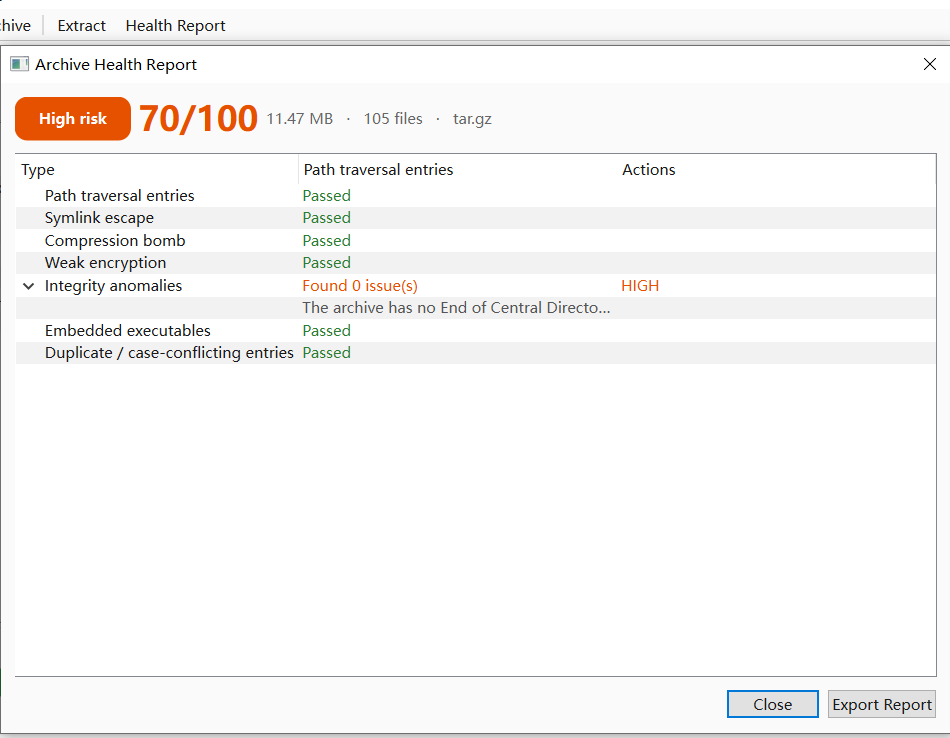
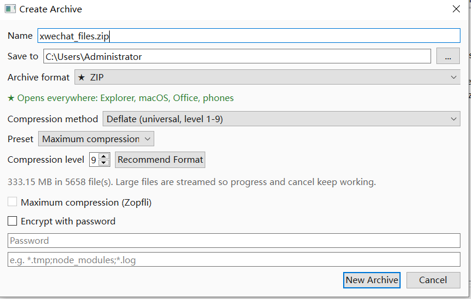
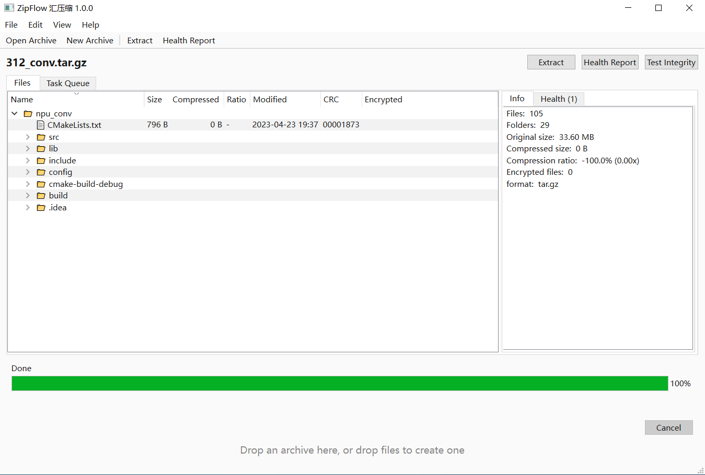
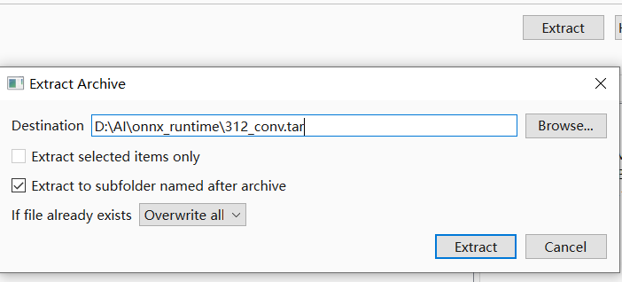
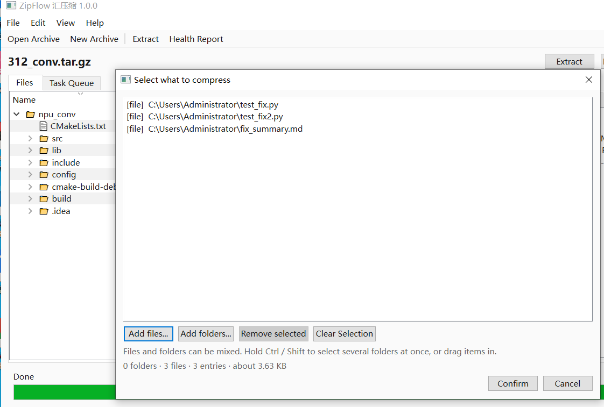

解压前先体检
7 项检测直接读压缩包索引。路径穿越和符号链接逃逸默认拦截；其余问题会列出具体条目名，由你决定怎么处理。
Windows 10 / 11 · 版本 1.0.0
ZipFlow 不急着把文件写进磁盘。它先读压缩包的目录结构，做 7 项安全检测，用一张 0–100 分的报告告诉你风险在哪；再根据文件构成，推荐真正合适的压缩方案。

ZipFlow（汇压缩）是一款免费、本地优先的 Windows 压缩解压软件。它在解压前检查 ZIP、7z、RAR（需 7-Zip）、TAR 等 30+ 种压缩包，报告 7 类安全风险；压缩前根据文件构成推荐格式、方法与档位。全部功能在本机完成，不联网。
7 项检测直接读压缩包索引。路径穿越和符号链接逃逸默认拦截；其余问题会列出具体条目名，由你决定怎么处理。
先采样文件构成，再给出容器、方法与档位，并预估节省空间和耗时。不用猜参数，也不用拿 CPU 试错。
图形界面、zf 命令行和本地 HTTP API 调用同一个核心。行为、错误码和安全策略完全一致。
压缩包本质上是一个由发送方控制的小型文件系统，里面有路径、链接和大小。ZipFlow 在写入第一个字节之前，先把这些元数据读完。
| 检测项 | 查什么 | 默认动作 |
|---|---|---|
| 路径穿越Zip Slip · CWE-22 | 解压后路径逃出目标目录的条目：../、绝对路径、盘符、UNC 路径。 |
拦截 |
| 符号链接逃逸先建链接再写入 | 指向解压目录之外的符号链接，以及随后借它写入的条目。 | 拦截 |
| 压缩炸弹资源耗尽 | 异常膨胀比、超大的声明解压体积，或可能耗尽磁盘和内存的条目数量。 | 标记 |
| 弱加密ZipCrypto | 使用旧式 ZipCrypto 而非 AES-256、参数过时，或无法校验的加密条目。 | 标记 |
| 完整性异常截断 · CRC | 缺少中央目录结束记录、数据截断、CRC 不匹配、大小字段前后矛盾。 | 标记 |
| 内嵌可执行文件双击风险 | .exe、.scr、.bat、.cmd、.ps1、.lnk、.js，以及带宏的 Office 文件。 |
标记 |
| 重复 / 大小写冲突覆盖把戏 | 同一路径出现两次，或在 Windows 不区分大小写的卷上会互相覆盖的文件名。 | 标记 |
报告从 100 分开始。每发现一个问题，按严重程度扣分：低 3 分、中 12 分、高 30 分、严重 60 分。100 分表示没有发现问题。
风险等级取最严重的那一项，而不是平均分。所以一份报告可能只有 70 分却标成高风险，因为某一项完整性检测失败了，就像上方截图那样。
每份报告都能导出 JSON，包含条目名、严重程度、各项检测结果和跳过原因，可以直接接进构建流程或工单系统。
{
"format": "zip",
"entry_count": 105,
"risk_level": "high",
"score": 70,
"findings": [
{
"check": "integrity",
"severity": "high",
"title": "完整性异常"
}
],
"checks_skipped": {}
}它不是杀毒软件。ZipFlow 检查压缩包结构与解压攻击模式，不查病毒特征，也不扫描文件内容。请继续开启 Windows 安全中心或其他杀毒软件，并把干净的体检报告视为一个信号，而不是保证。
大多数工具让你自己选格式、方法和级别，然后祈祷结果合适。ZipFlow 先采样，判断里面主要是源码、文档、图片、视频、已压缩媒体还是二进制文件。
推荐结果包含容器、方法、级别、预计节省空间和预计耗时。每个选项都会标明谁能直接打开：
在任何创建命令后加上 --info，就能在不写文件的情况下看到方案、剩余磁盘空间和预计结果。
推荐：ZIP / deflate 级别 9（极限压缩）
★ 全市场通吃 —— Windows 资源管理器、macOS、Office、
手机、云盘，无需安装任何软件。
理由：以文本和源码为主：ZIP + Deflate 最高级别。
比 7z 略大一点，但谁都能双击打开。
预计节省：80.6%（194.83 KB -> 37.72 KB）
预计耗时：0 秒
内容构成：文本文档 8★ 全市场通吃
archive : big.zip
format : zip method=(default) level=9 zopfli=False
sources : 194.83 KB in 8 file(s)
free : 83.90 GB
预计结果：37.72 KB（80.6%），耗时约 0 秒ZipFlow 1.0.0 在 Windows 11 上的实际界面。支持中英文，运行时切换。




引擎层不依赖 Qt。所以桌面界面、zf 命令和 HTTP API 的行为与错误信息完全一致。
127.0.0.1，需要 Bearer Token即使忽略报告，核心层仍会强制做路径安全检查：所有落盘写入都要经过 SecurityGuard。
# 解压前体检；JSON 给 CI 用
zf s suspicious.zip --json
# 默认产物：ZIP + Deflate L9
zf a dist.zip ./src
# 体积更小，但接收方需要 7-Zip
zf a dist.7z ./src -f 7z
# 只看方案，不写文件
zf a big.zip ./data --info
# 解压、推荐、完整性测试
zf x dist.zip -o ./out
zf r ./src --prefer auto
zf t dist.zip
# 本地 API（Bearer Token）
zf serve --port 8765默认 ZIP，是因为接收方不应该为了打开一个包再装软件。需要更小体积、更快速度或符合平台习惯时，再选其它容器。
| 分组 | 格式 | 方向 |
|---|---|---|
| 默认 · 全市场通吃★ 到处都能开 | ZIP —— Zip64、Deflate 1–9、AES-256、可选 Zopfli | 读 / 写 |
| 体积最小! 接收方需要 7-Zip | 7z —— 固实字典、LZMA2 | 读 / 写 |
| Unix 标准 | TAR、TAR.GZ、TAR.BZ2、TAR.XZ | 读 / 写 |
| 高速 · 较新系统◐ Windows 11 24H2+ 或 7-Zip 22.04+ | TAR.ZST、Zstandard | 读 / 写 |
| 仅读取RAR 算法专有，不能创建 | RAR、ISO、CAB、DMG、LZ、CPIO、RPM、DEB、SquashFS、NSIS、VHD/VHDX/VDI/VMDK、WIM、UDF、EXT、ARJ、LZH、CHM、PPMd、多卷、OOXML | 仅读取 |
RAR 只读是刻意的功能边界，并且需要系统安装 7-Zip 才能读取。ZIP、7z、TAR 等格式由内置引擎处理，没有 7-Zip 也能正常使用其它功能。
ZipFlow 不需要你相信某个隐私选项。微软商店安装包不声明 internetClient 能力，Windows 在系统边界上直接阻断网络访问。
%APPDATA%\ZipFlow\settings.json<!-- 未声明 internetClient 能力 -->
<Capabilities>
<rescap:Capability
Name="runFullTrust" />
</Capabilities>7-Zip 在压缩率上很强，Windows 资源管理器胜在顺手。ZipFlow 关注的是解压之前那一刻：你还不知道这个包里到底有什么。
| 能力 | ZipFlow | 7-Zip | Windows 资源管理器 |
|---|---|---|---|
| 价格 | 免费，LGPL-3.0 | 免费，LGPL | 随 Windows 提供 |
| 压缩包体检 | 7 项 + 评分 | 无 | 无 |
| 压缩方案推荐 | 格式、档位、节省、耗时 | 手动设置 | 无 |
| 可写格式 | 7 种容器 | 多种，含 7z 与 ZIP | 仅 ZIP |
| CLI + 本地 API | 有，同一引擎 | 有 CLI，无 API | 无 |
| 遥测 | 无，且无联网能力 | 无 | 受系统遥测设置影响 |
是。ZipFlow 免费下载、免费使用，没有账号、广告、内购或功能次数限制。许可证为 LGPL-3.0，许可证文本随仓库提供。
不会。ZipFlow 没有遥测、统计分析或云同步。微软商店安装包不声明 internetClient 能力，Windows 在系统层面阻止联网。文件、文件名和压缩包路径都不会离开本机。
RAR 可以列出和解压，但需要系统安装 7-Zip：RAR 压缩算法专有，ZipFlow 通过外部 7-Zip 引擎读取。不支持创建 RAR。ZIP、7z、TAR 等内置格式无需 7-Zip 即可使用。
不能。ZipFlow 检查的是压缩包结构和已知的解压攻击模式，不查病毒特征，也不扫描文件内容。请继续开启 Windows 安全中心或其他杀毒软件，并把干净的体检报告视为一个信号，而不是保证。
满分 100，按严重程度扣分：低 3 分、中 12 分、高 30 分、严重 60 分。100 分表示没有发现问题。风险等级取最严重的那一项；所有报告都可以导出 JSON。
支持 7 种容器：ZIP（默认）、7z、TAR、TAR.GZ、TAR.BZ2、TAR.XZ 和 TAR.ZST。ZIP 支持 Zip64、Deflate 1–9 级、AES-256 加密以及可选的 Zopfli 极限压缩。每个选项都会标注接收方能否直接打开。
支持。安装版提供 zf 命令，源码运行使用 python -m zipflow --cli。命令覆盖创建、解压、列表、测试、推荐、体检和本地 API。发现严重的路径穿越或符号链接逃逸时返回退出码 3，可直接用于 CI 卡点。
ZipFlow 1.0.0 支持 64 位 Windows 10 1809 及以上版本，以及 Windows 11。微软商店提供 MSIX 安装包，GitHub 提供免安装版本。
ZIP 在 Windows 资源管理器、macOS、Office、手机和云盘上都能直接打开，接收方不需要装任何软件。7z 通常更小，但对方需要 7-Zip 或兼容工具。ZipFlow 默认选兼容性最好的格式，需要更小体积时可以显式选 7z。
开源。ZipFlow 以 LGPL-3.0 开源许可证发布；许可证文本在仓库中，第三方组件声明随应用提供。
可以。zf s archive.zip --json 输出机器可读的体检报告；发现严重的路径穿越或符号链接逃逸时返回退出码 3，可让构建失败。其他发现可以解析 JSON 后按自己的阈值处理。
最后更新：2026 年 11 月 3 日 · 适用于 ZipFlow 1.0.0
MSIX 安装，自动更新。1.0.0 版本正在陆续上架，可在商店应用中搜索 ZipFlow。
不写注册表，不需要安装程序。从 GitHub Releases 下载最新 onedir 包，直接运行 ZipFlow.exe。
许可证文本、版本说明和问题追踪都在 GitHub。ZipFlow 以 LGPL-3.0 发布。
系统要求：64 位 Windows 10 1809 及以上，或 Windows 11。MSIX 下载体积 53.9 MB；免安装版约占 130 MB 磁盘空间。版本 1.0.0。
免费、离线，而且愿意把判断依据摊开给你看。